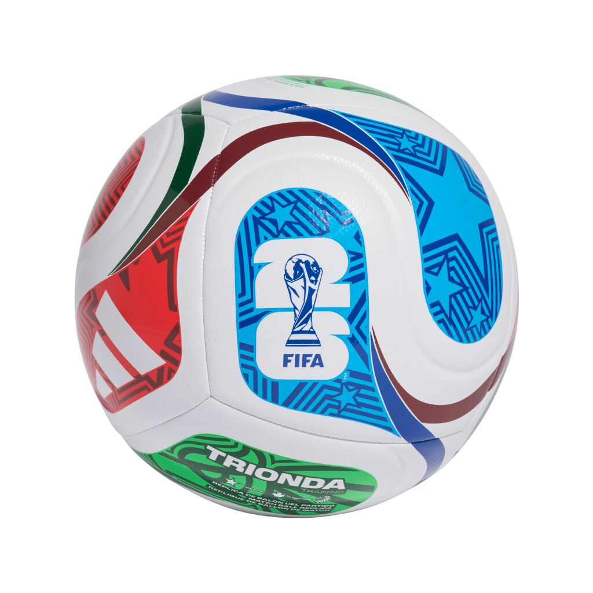

Jalkapallo on maailman paras urheilulaji. Nautin jalkapallon katsomisesta, eri liigojen ja kilpailujen seuraamisesta ja tietysti itse jalkapallon pelamisesta Pelasin jalkapalloa 10 vuotta kunnes lopetin 2021 loukkaantumisten vuoksi. Lempijoukkueeni on Manchester United ja olen kannattanut joukkuetta vuodesta 2016 lähtien. Tällä nettisivulla kerron lisää kiinnostuksestani jalkapallosta.
